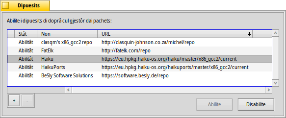

Dipuesits
Dipuesits
| Deskbar: | ||
| Posizion: | /boot/system/preferences/Repositories | |
| Impostazions: | ~/config/settings/Repositories_settings |
I Dipuesits a son colezions di pachets software. Configurâts in maniere predefinide, al è il dipuesit Haiku cun ducj i pachets dal sisteme operatîf e chel HaikuPorts, che al propon un grant numar di programs natîfs par Haiku e migrâts di altris plateformis. A esistin diviers altris dipuesits, curâts dai membris de comunitât di Haiku. Controle i Sîts dai software sul nestri sît web.
Chest al è il panel des preferencis par gjestî i tiei dipuesits (tu lu puedis vierzi ancje dal menù dentri di HaikuDepot):
La prime colone inte liste dai dipuesits cognossûts e mostre se un dipuesit in chel moment al è abilitât o mancul. Se nol è abilitât, nol vignarà interogât di HaikuDepot o di pkgman de rie di comant. Dopre i botons o par abilitâ o disabilitâ il dipuesit selezionât, o fâs dopli clic suntun dipuesit par comutâ il so stât.
In base ae dimension dal dipuesit e de velocitât de tô conession internet, abilitâ un dipuesit al pues stâ cualchi secont. Se al sta di plui, tu vignarâs informât des ativitâts in vore intal piçul ricuadri parsore dai bontons . Se al sta masse timp, ti si domandarà se anulâ o tornâ a provâ.
Par rivâ a gjavâ dal dut un dipuesit cul boton "", al è di sei disabilitât.
Tu zontis un gnûf dipuesit cul boton "" , che al vierzarà chest panel:
Par zontâ un gnûf dipuesit, al baste tacâ il so URL tal cjamp di test. Al vignarà clamât "No cognossût" fin ae sô abilitazion.